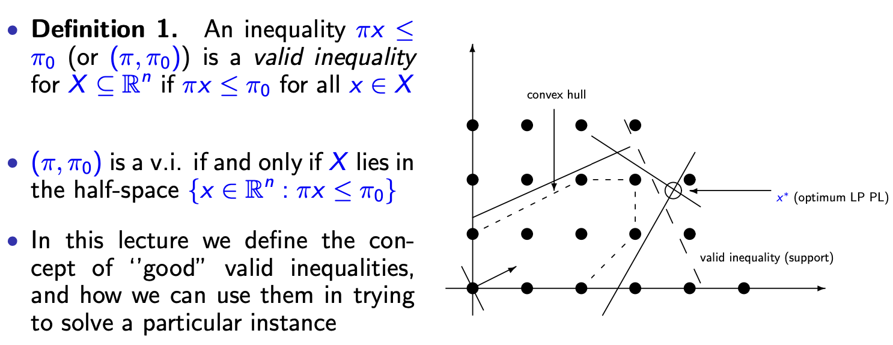
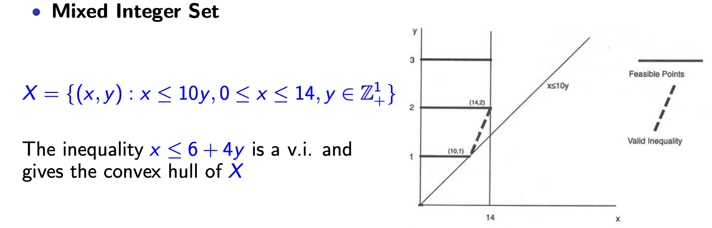
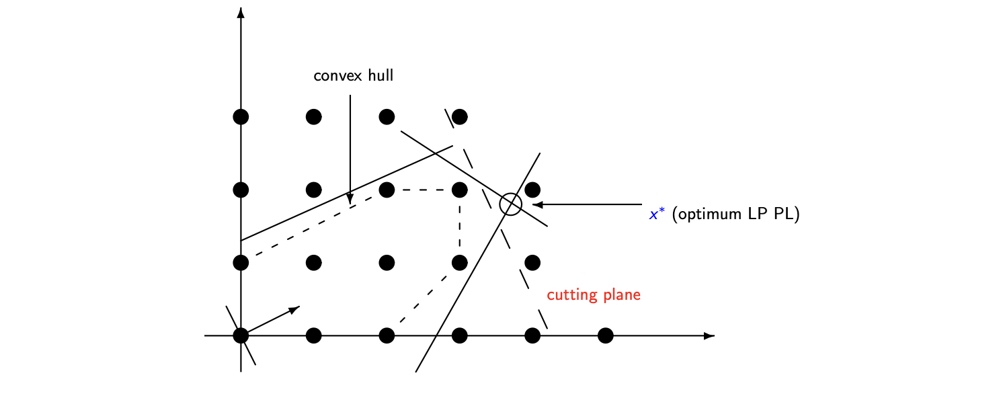
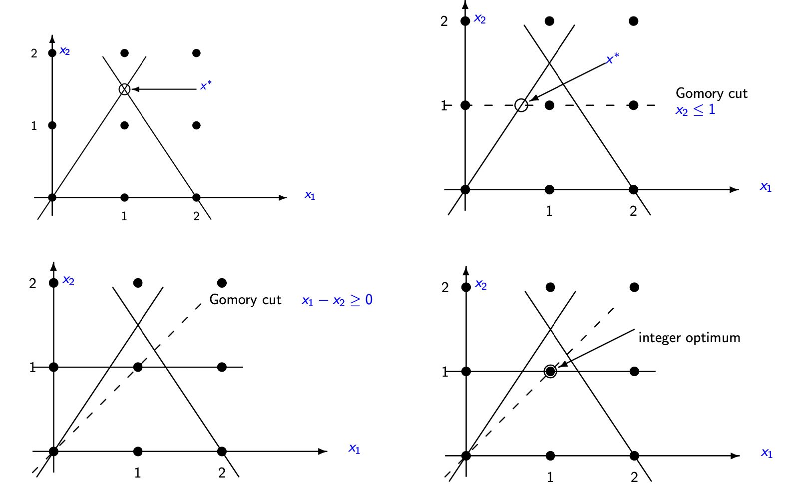
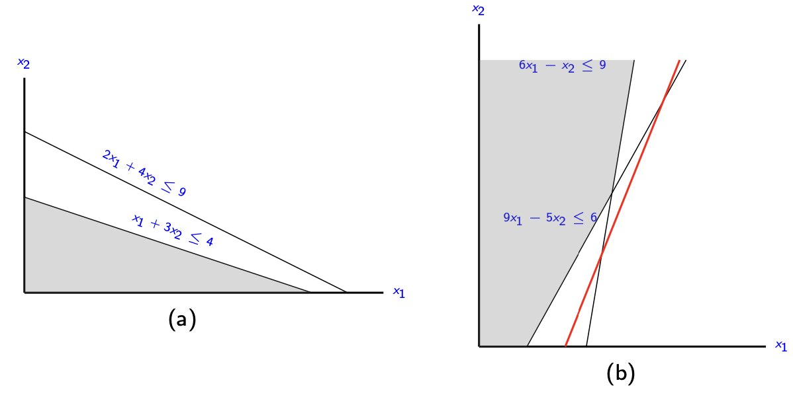
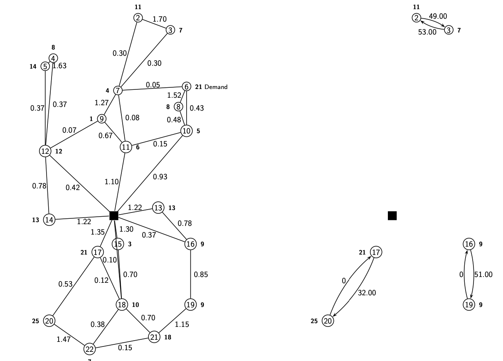

离散优化 Ch_07: 多面体理论与割平面算法¶
本讲概要
本讲介绍多面体理论与割平面算法，通过生成有效不等式来近似 \(\operatorname{conv}(X)\)，增强线性规划松弛。核心方法包括 Chvátal-Gomory 舍入过程、混合整数舍入 (MIR)、析取法。关键结论：满维多面体由面的不等式唯一刻画；Gomory 算法有限步收敛。最后以 CVRP 实例展示分支切割法的完整求解流程。
1. 引言 (Introduction)¶
1.1 问题定义¶
整数规划问题 (Integer Program, IP)
$$ (IP) \quad \min {c x : x \in X} $$ 其中 \(X = P \cap \mathbb{Z}^n\)，且 \(P = \{x \in \mathbb{R}_+^n : Ax \geq a\}\)。
混合整数规划问题 (Mixed Integer Program, MIP)
$$ (MIP) \quad \min {c x + h y : (x, y) \in X^M} $$ 其中 \(X^M = P^M \cap (\mathbb{Z}^n \times \mathbb{R}^p)\)，且 \(P^M = \{(x, y) \in \mathbb{R}_+^n \times \mathbb{R}_+^p : Gx + Hy \geq b\}\)。
1.2 核心目标¶
本讲目标
- 理想形式 (Ideal Formulation)：由 \(\operatorname{conv}(X)\)（或 \(\operatorname{conv}(X^M)\)）提供，是最强的可能形式
- 寻找有效方法来近似 \(\operatorname{conv}(X)\)，通过生成有效不等式 (Valid Inequalities) 来增强松弛形式，获得更强的松弛
2. 有效不等式 (Valid Inequalities)¶
2.1 基本定义¶
定义 1：有效不等式 (Valid Inequality)
不等式 \(\pi x \leq \pi_0\)（或记为 \((\pi, \pi_0)\)）对集合 \(X \subseteq \mathbb{R}^n\) 是有效的，当且仅当对所有 \(x \in X\) 都有 \(\pi x \leq \pi_0\)。
等价地，\((\pi, \pi_0)\) 是有效不等式当且仅当 \(X\) 包含于半空间 \(\{x \in \mathbb{R}^n : \pi x \leq \pi_0\}\) 中。

2.2 简单示例¶
示例 1：0-1 背包集 (0-1 Knapsack Set)¶
导出有效不等式：
| 条件 | 推导 | 有效不等式 |
|---|---|---|
| 若 \(x_2 = x_4 = 0\) | 则 \(3x_1 + 2x_3 + x_5 \not\leq -2\) | \(x_2 + x_4 \geq 1\) |
| 若 \(x_1 = 1\) 且 \(x_2 = 0\) | 则 \(3 + 2x_3 - 3x_4 + x_5 \geq 3 - 3 = 0 \not\leq -2\) | \(x_1 \leq x_2\) |
示例 2：混合整数集 (Mixed Integer Set)¶
- 不等式 \(x \leq 6 + 4y\) 是有效不等式，且给出了 \(X\) 的凸包 (Convex Hull)

示例 3：舍入法 (Rounding)¶
考虑整数规划：
推导步骤：
-
对三个约束取线性组合（权重 \(\alpha = 1/2\)）： $$ x_1 + x_2 + x_3 + \frac{1}{2}x_4 + \frac{1}{2}x_5 + \frac{1}{2}x_6 = \frac{3}{2} $$
-
降低系数并替换等号为不等号： $$ x_1 + x_2 + x_3 \leq \frac{3}{2} $$
-
由于左侧为整数，右侧必须 \(\leq \lfloor \frac{3}{2} \rfloor = 1\)，得到有效不等式： $$ x_1 + x_2 + x_3 \leq 1 $$
-
该不等式割掉了 LP 最优解 \(x^* = [1/2, 1/2, 1/2, 0, 0, 0]^T\)
示例 4：图匹配问题 (Matching Problem)¶
对于图 \(G = (V, E)\)，匹配问题的可行解集为：
若 \(T \subseteq V\) 且 \(|T|\) 为奇数，则由于匹配边不相交，两端点都在 \(T\) 中的边数至多为 \(\frac{|T|-1}{2}\)：
这是 \(X\) 的有效不等式。
3. 生成有效不等式的方法¶
3.1 引言¶
若 \(X\) 是整数可行解集，\(P\) 是线性松弛的可行域，除非 \(\operatorname{conv}(X) = P\)，否则存在对 \(\operatorname{conv}(X)\) 有效但对 \(P\) 无效的割平面。
主要技术
- 舍入 (Rounding)
- 模算术 (Modular Arithmetic)
- 混合整数舍入 (Mixed Integer Rounding, MIR)
- 析取 (Disjunctions)
- 超可加性 (Superadditivity)：基于超可加函数的性质推导有效不等式，是统一舍入、模算术等割生成方法的核心理论工具，可构造更强的有效不等式
3.2 舍入法 (Rounding)¶
基本观察¶
- 若 \(x \in \mathbb{Z}\) 且 \(x \leq a\)，则 \(x \leq \lfloor a \rfloor\) 是有效不等式
- 若 \(Ax \leq b\) 对 \(X\) 有效且 \(u \geq 0\)，则 \(uAx \leq ub\) 对 \(\operatorname{conv}(X)\) 也有效
Chvátal-Gomory 过程¶
令 \(A_1, \ldots, A_n\) 为矩阵 \(A \in \mathbb{Q}^{m \times n}\) 的列，\(b \in \mathbb{Q}^m\)，且：
Chvátal-Gomory 过程步骤
-
选择 \(u = (u_1, \ldots, u_m) \geq 0\)，计算线性组合： $$ \sum_{j=1}^n (uA_j)x_j \leq ub $$
-
对系数向下取整： $$ \sum_{j=1}^n (\lfloor uA_j \rfloor)x_j \leq ub $$
-
对右侧向下取整： $$ \sum_{j=1}^n (\lfloor uA_j \rfloor)x_j \leq \lfloor ub \rfloor $$
Chvátal 闭包 (Chvátal Closure)¶
通过改变 \(u\) 得到多面体 \(P = \{x \in \mathbb{R}_+^n : Ax \leq b\}\) 的第一 Chvátal 闭包：
定理 1
\(P_1\) 是一个多面体 (polyhedron)。
迭代序列：
定理 2
对 \(\operatorname{conv}(P \cap \mathbb{Z}^n)\) 的每个有效不等式，都可以通过有限次应用 Chvátal-Gomory 过程得到。
定义 2：有理多面体 (Rational Polyhedron)
若存在具有有理系数的 \(m \times (n+1)\) 矩阵 \((A,b)\) 使得 \(P = \{x \in \mathbb{R}^n : Ax \leq b\}\)，则称 \(P\) 为有理多面体。
定理 3
设 \(P\) 为有理多面体，则存在某个 \(k \in \mathbb{N}\) 使得 \(P_k = \operatorname{conv}(P \cap \mathbb{Z}^n)\)。
定义 3：Chvátal 秩 (Chvátal Rank)
使 \(P_k = \operatorname{conv}(P \cap \mathbb{Z}^n)\) 成立的最小整数 \(k\) 称为 \(P\) 的Chvátal 秩。
匹配问题的应用¶
对于匹配问题，可以证明：
3.3 模算术 (Modular Arithmetic)¶
考虑集合：
令 \(d \in \mathbb{Z}_+\)，定义：
有 \(X \subseteq X_d\)。设 \(a_j = b_j + \alpha_j d\)（\(b_j\) 为 \(a_j/d\) 的余数），则：
对 \(\operatorname{conv}(X)\) 有效（因为左侧 \(\geq 0\) 且 \(b_0 < d\) 迫使 \(w \geq 0\)）。
Gomory 割平面 (Gomory Cuts)
当 \(d=1\) 且 \(a_j\) 非整数时，\(a_j = \lfloor a_j \rfloor + (a_j - \lfloor a_j \rfloor)\)，得到有效不等式：
3.4 混合整数舍入 (Mixed Integer Rounding, MIR)¶
命题 1
设 \(X = \{(x, y) \in \mathbb{R}_+^1 \times \mathbb{Z}^1 : x + y \geq b\}\)，且 \(\hat{b} = b - \lfloor b \rfloor > 0\)。则不等式： $$ \frac{x}{\hat{b}} + y \geq \lceil b \rceil $$
对 \(X\) 有效。
推论 1
若 \(X = \{(x, y) \in \mathbb{R}_+^1 \times \mathbb{Z}^1 : y \leq b + x\}\)，且 \(\hat{b} = b - \lfloor b \rfloor > 0\)，则：
对 \(X\) 有效。
3.5 析取法 (Disjunctions)¶
思想：将可行整数解集 \(X\) 划分为两个或多个部分，为每个部分导出不等式，再组合成对整个 \(X\) 有效的不等式。
命题 2
设 \(X = X^1 \cup X^2\)，\(X^i \subseteq \mathbb{R}_+^n\)。若 \(\sum_{j=1}^n \pi_j^i x_j \leq \pi_0^i\) 对 \(X^i\) 有效（\(i=1,2\)），则不等式：
对 \(X\) 有效，如果满足： - \(\pi_j \leq \min\{\pi_j^1, \pi_j^2\}\) 对所有 \(j\) - \(\pi_0 \geq \max\{\pi_0^1, \pi_0^2\}\)
4. 割平面算法 (Cutting Plane Algorithms)¶

4.1 分离问题 (Separation Problem)¶
定义 4：分离问题 (Separation Problem)
给定多面体 \(P \subset \mathbb{R}^n\) 和向量 \(x^* \in \mathbb{R}^n\)，分离问题是：
- 判定 \(x^* \in P\)，或
- 找到对 \(P\) 的有效不等式 \((\pi, \pi_0)\) 使得 \(\pi x^* > \pi_0\)
定义 5：对族 \(\mathcal{F}\) 的分离问题
给定 \(x^* \in P\)，判定 \(x^*\) 满足 \(\mathcal{F}\) 中所有不等式，或找到 \((\pi, \pi_0) \in \mathcal{F}\) 使得 \(\pi x^* > \pi_0\)
4.2 通用割平面算法¶
输入：整数规划 \(\min\{cx : x \in X\}\)，其中 \(X = P \cap \mathbb{Z}^n\)，以及有效不等式族 \(\mathcal{F}\)
通用割平面算法流程
注意：实际中分离算法可能不精确，若未找到最优整数解，可通过分支定界（Branch-and-Bound）分解问题，这引出了分支切割法 (Branch-and-Cut)。
4.3 Gomory 割平面算法¶
假设：整数规划形式为 \(\min \{cx : Ax = b, x \geq 0, x \in \mathbb{Z}^n\}\)，其中 \(A \in \mathbb{Q}^{m \times n}\)，\(\operatorname{rank}(A) = m\)
单纯形表表示：
设 \(B\) 为最优基，\(N\) 为非基变量集。方程为：
Gomory 割生成
若 \(\bar{b}_i\) 非整数，推导割平面：
或记 \(\varphi(x) = x - \lfloor x \rfloor\)（小数部分）：
该不等式被当前解 \(x\) 违反（因为左侧为 0，右侧 > 0）。

定理 4：收敛性
若使用字典序单纯形法 (lexicographic Simplex) 并总是从第一个基变量为分数的行导出割，则 Gomory 算法在有限步后终止于最优整数解。
实现问题
- 通常需要大量割平面
- 数值误差可能导致错误
- 直到最后才获得可行解
5. 强有效不等式 (Strong Valid Inequalities)¶
目标：理解描述多面体所必需的重要不等式，即提供最佳可能的割。
5.1 仿射独立性 (Affine Independence)¶
定义 6：仿射独立 (Affinely Independent)
点集 \(x^1, \ldots, x^k \in \mathbb{R}^n\) 是仿射独立的，如果 \(\sum_{i=1}^k \alpha_i x^i = 0\) 且 \(\sum_{i=1}^k \alpha_i = 0\) 的唯一解是 \(\alpha_i = 0\) 对所有 \(i\)
命题 3：等价条件
以下条件等价： 1. \(x^1, \ldots, x^k\) 仿射独立 2. \(x^2-x^1, \ldots, x^k-x^1\) 线性独立 3. \((x^1, 1), \ldots, (x^k, 1) \in \mathbb{R}^{n+1}\) 线性独立
命题 4
若 \(\{x \in \mathbb{R}^n : Ax = b\} \neq \emptyset\)，则 \(Ax = b\) 的仿射独立解的最大数量为 \(n + 1 - \operatorname{rank}(A)\)
5.2 多面体与维数 (Polyhedra and Dimension)¶
定义 7：维数 (Dimension)
多面体 \(P\) 的维数为 \(k\)，记作 \(\dim(P) = k\)，如果 \(P\) 中仿射独立点的最大数量为 \(k+1\)
定义 8：满维 (Full Dimension)
若 \(\dim(P) = n\)，则称 \(P \subseteq \mathbb{R}^n\) 为满维的
记号：
| 符号 | 含义 |
|---|---|
| \(M = \{1, \ldots, m\}\) | 约束指标集 |
| \(M^= = \{i \in M : a^i x = b_i \text{ 对所有 } x \in P\}\) | 等式集 (equality set) |
| \(M^\leq = M \setminus M^=\) | 不等式集 |
定义 9：内点 (Inner Point)
\(x \in P\) 是 \(P\) 的内点，如果对所有 \(i \in M^\leq\) 有 \(a^i x < b_i\)
定义 10：内点 (Interior Point)
\(x \in P\) 是 \(P\) 的内点，如果对所有 \(i \in M\) 有 \(a^i x < b_i\)
命题 5
每个非空多面体 \(P\) 都有内点
命题 6
若 \(P \subseteq \mathbb{R}^n\)，则 \(\dim(P) + \operatorname{rank}(A^=, b^=) = n\)
推论 2
多面体 \(P\) 是满维的当且仅当它有内点
5.3 支配与冗余 (Dominance)¶
定义 11：支配 (Dominance)
若 \(\pi x \leq \pi_0\) 和 \(\mu x \leq \mu_0\) 都是 \(P \subseteq \mathbb{R}_+^n\) 的有效不等式，称 \(\pi x \leq \pi_0\) 支配 \(\mu x \leq \mu_0\)，如果存在 \(u > 0\) 使得 \(\pi \geq u\mu\) 且 \(\pi_0 \leq u\mu_0\)，且 \((\pi, \pi_0) \neq (u\mu, u\mu_0)\)
定义 12：冗余 (Redundant)
有效不等式 \(\pi x \leq \pi_0\) 在 \(P\) 的描述中是冗余的，如果存在 \(k \geq 1\) 个有效不等式 \(\pi^i x \leq \pi_0^i\) 和权重 \(u_i > 0\)，使得 \(\left(\sum_{i=1}^k u_i \pi^i\right)x \leq \sum_{i=1}^k u_i \pi_0^i\) 支配 \(\pi x \leq \pi_0\)

5.4 用面描述多面体 (Describing Polyhedra by Facets)¶
定义 13：面 (Face)
若 \((\pi, \pi_0)\) 对 \(P\) 有效，且 \(F = \{x \in P : \pi x = \pi_0\}\)，则称 \(F\) 为 \(P\) 的面，\((\pi, \pi_0)\) 定义/表示 \(F\)
定义 14：真面 (Proper Face)
面 \(F\) 是真的，如果 \(F \neq \emptyset\) 且 \(F \neq P\) - \(F \neq \emptyset\) 当且仅当 \(\max\{\pi x : x \in P\} = \pi_0\)（称 \((\pi, \pi_0)\) 支撑 \(P\)） - \(F \neq P\) 当且仅当 \((\pi, \pi_0)\) 不在等式集中
命题 7
若 \(P = \{x : Ax \leq b\}\) 的等式集为 \(M^=\)，\(F\) 是 \(P\) 的非空面，则 \(F\) 是多面体，且可表示为 \(F = \{x : a^i x = b_i \text{ for } i \in M_F^=, a^i x \leq b_i \text{ for } i \in M_F^\leq\}\)，其中 \(M_F^= \supseteq M^=\)
推论 3
\(P\) 的不同面的数量是有限的
定义 15：面 (Facet)
\(P\) 的面 \(F\) 称为面 (Facet)，如果 \(\dim(F) = \dim(P) - 1\)
核心命题
- 命题 8：若 \(F\) 是 \(P\) 的面，则在 \(P\) 的任何描述中，都存在某个不等式表示 \(F\)
- 命题 9：每个表示非面 (non-facet) 的不等式在 \(P\) 的描述中都是不必要的（即面足以描述 \(P\)）
定理 5
- 每个满维多面体 \(P\) 有唯一的（至多标量倍数）最小表示，由每个面的一个不等式组成
- 若 \(\dim(P) = n - k\)（\(k > 0\)），则 \(P\) 由 \((A^=, b^=)\) 的任意 \(k\) 个线性无关行以及每个面的一个不等式描述
定理 6
若面 \(F\) 由 \((\pi, \pi_0)\) 表示，则 \(F\) 的所有表示由 \((\pi, \pi_0)\) 的标量倍数加上 \(P\) 等式集的线性组合得到
6. 面与凸包证明 (Facet and Convex Hull Proofs)¶
6.1 主要问题¶
| 问题 | 描述 |
|---|---|
| 问题 1 | 给定 \(X \subset \mathbb{Z}_+^n\) 和有效不等式 \(\pi x \leq \pi_0\)，证明该不等式定义 \(\operatorname{conv}(X)\) 的一个面 |
| 问题 2 | 证明多面体 \(P = \{x : Ax \leq b\}\) 描述 \(\operatorname{conv}(X)\) |
6.2 面证明方法 (Facet Proofs)¶
方法 1（\(\operatorname{conv}(X)\) 有界且满维）
找到 \(n\) 个点 \(x^1, \ldots, x^n \in X\) 满足 \(\pi x = \pi_0\)，并证明这些点仿射独立
方法 2
选择 \(t \geq n\) 个点 \(x^1, \ldots, x^t \in X\) 满足 \(\pi x = \pi_0\)。假设它们都在某超平面 \(\mu x = \mu_0\) 上，解线性方程组： $$ \sum_{j=1}^n \mu_j x_j^k = \mu_0, \quad k=1,\ldots,t $$ 若唯一解为 \((\mu, \mu_0) = \lambda(\pi, \pi_0)\)（\(\lambda \neq 0\)），则 \(\pi x \leq \pi_0\) 是定义面的
6.3 背包多面体 (The Knapsack Polytope)¶
考虑：
假设 \(a_j > 0\)，\(b > 0\)，且 \(a_j \leq b\)（否则 \(x_j = 0\)）。
维数：\(\dim(\operatorname{conv}(X)) = n\)（满维），因为 \(x^\emptyset\) 和 \(x^{\{j\}}\)（\(j \in N\)）构成 \(n+1\) 个仿射独立点
覆盖不等式 (Cover Inequalities)¶
定义 16：覆盖 (Cover)
集合 \(C \subseteq N\) 是覆盖，如果 \(\sum_{j \in C} a_j > b\)
覆盖是极小的 (minimal)，如果对任意 \(j \in C\)，\(C \setminus \{j\}\) 不是覆盖
命题 10：覆盖不等式
若 \(C\) 是覆盖，则覆盖不等式： $$ \sum_{j \in C} x_j \leq |C| - 1 $$ 对 \(X\) 有效
定理 7
若 \(C\) 是极小覆盖，则覆盖不等式定义 \(\{x \in \mathbb{B}^{|C|} : \sum_{j \in C} a_j x_j \leq b\}\) 的凸包的一个面
扩展覆盖不等式 (Extended Cover Inequalities)¶
命题 11：扩展覆盖不等式
若 \(C\) 是覆盖，则扩展覆盖不等式：
有效，其中 \(E(C) = C \cup \{j : a_j \geq a_i \text{ 对所有 } i \in C\}\)
分离问题¶
给定非整数点 \(x^*\)，检查是否：
可建模为 0-1 整数规划求解。
6.4 稳定集问题 (The Stable Set Problem)¶
对于图 \(G = (V, E)\)，加权稳定集问题 (WSSP)：
团不等式 (Clique Inequalities)¶
定义 18：团 (Clique)
\(U \subseteq V\) 是团，如果对任意 \(i,j \in U\)，\(\{i,j\} \in E\)
定义 19：极大团 (Maximal Clique)
团 \(U\) 是极大的，如果对任意 \(i \in V \setminus U\)，\(U \cup \{i\}\) 不是团
团不等式性质
- 团不等式 \(\sum_{i \in U} x_i \leq 1\) 对任何团 \(U\) 有效
- 团不等式是定义面的当且仅当 \(U\) 是极大团
奇圈不等式 (Odd-Cycle Inequalities)¶
对奇圈 \(C \subseteq E\)，有：
6.5 提升有效不等式 (Lifting a Valid Inequality)¶
思想：将低维空间上定义面的不等式提升到高维空间
定理 8：提升定理
设 \(\mathcal{F} \subset \mathbb{B}^n\)，\(\mathcal{F}_i = \mathcal{F} \cap \{x : x_1 = i\}\)。假设不等式 \(\sum_{j=2}^n a_j x_j \leq a_0\) 对 \(\mathcal{F}_0\) 有效。
a) 若 \(\mathcal{F}_1 = \emptyset\)，则 \(x_1 \leq 0\) 对 \(\mathcal{F}\) 有效
b) 若 \(\mathcal{F}_1 \neq \emptyset\)，则不等式：
对 \(\mathcal{F}\) 有效，其中 \(a_1 \leq a_0 - Z\)，\(Z\) 是 \(\max\{\sum_{j=2}^n a_j x_j : x \in \mathcal{F}_1\}\) 的最优值
c) 若 \(a_1 = a_0 - Z\) 且原不等式定义 \(\operatorname{conv}(\mathcal{F}_0)\) 的 \(k\) 维面，则新不等式定义 \(\operatorname{conv}(\mathcal{F})\) 的 \(k+1\) 维面
7. 分支切割法 (Branch-and-Cut Methods)¶
分支切割是基于 LP 的分支定界方案，通过分离程序动态生成有效不等式来增强线性规划松弛。
7.1 计算组件¶
| 组件 | 说明 |
|---|---|
| 预处理 (Preprocessing) | 使用逻辑论证简化模型 |
| 割生成 (Cut generation) | 动态生成有效不等式 |
| LP 松弛管理 | 控制松弛规模，删除无效割 |
| 搜索策略 | 节点选择策略 |
| 分支策略 | 变量选择策略 |
| 原始启发式 (Primal heuristics) | 寻找可行整数解 |
7.2 预处理 (Preprocessing)¶
- 隐含界 (Implied bounds)：由有效不等式推导变量上下界
- 冗余检测：若 \(\sum_{j:\pi_j>0} \pi_j u_j + \sum_{j:\pi_j<0} \pi_j l_j \leq \pi_0\)，则约束冗余
- 探测 (Probing)：对 0-1 整数规划，通过逻辑推断固定变量值
- 系数改进、界改进等
7.3 LP 松弛管理¶
- 割数量限制：每次迭代只添加少量最违反的割
- 割删除：删除对偶值接近零、松弛变量是基变量或取正值的割
- 割池 (Cut Pool)：存储有效割供后续使用，但需限制大小
8. CVRP 的分支切割法实例¶
8.1 问题描述¶
使用双商品流形式 (Two-commodity flow formulation)：
8.2 计算过程示例 (Instance E-n22-k4)¶
初始 LP 松弛：
- \(z(LP) = 309.97\)
- 支持图 \(G(y^*)\) 显示边 \(\{2,3\}\) 的度大于 1

添加割平面：
1. 平凡不等式 (Trivial Inequalities)¶
2. 流不等式 (Flow Inequalities)¶
若边 \(\{i,j\}\) 在解中，则流量至少为 \(q_j\)：
添加 16 个平凡不等式和 34 个流不等式后，下界提升至 350.32
3. 容量约束 (Rounded Capacity Constraints)¶
对 \(S = \{18,19,20,21,22\}\)，有 \(\sum_{i \in S}\sum_{j \in \overline{S}} (y_{ij}^* + y_{ji}^*) = 3.0\)，而 \(\lceil q(S)/Q \rceil = 2\)
添加：
使用贪婪随机算法 (Greedy Randomized Algorithm) 分离这些约束
添加 142 个容量约束后，下界达到 375.00，且解为整数，即为最优解
8.3 分支规则¶
若解非整数，选择集合 \(S \subseteq V_c\) 分支：
| 规则 | 约束 |
|---|---|
| SP1 | 强制 \(\sum_{\{i,j\} \in \delta(S)} (y_{ij} + y_{ji})/Q = 2\lceil q(S)/Q \rceil\) |
| SP2 | 强制 \(\sum_{\{i,j\} \in \delta(S)} (y_{ij} + y_{ji})/Q \geq 2\lceil q(S)/Q \rceil + 2\) |
9. 参考文献与数学规划求解器¶
主要参考文献¶
| 文献 | 说明 |
|---|---|
| Bertsimas & Weismantel [4] | Optimization over Integers（整数优化） |
| Nemhauser & Wolsey [6] | Integer and Combinatorial Optimization（整数与组合优化经典教材） |
| Wolsey [7] | Integer Programming |
数学规划求解器¶
| 类型 | 求解器 | 特点 |
|---|---|---|
| 开源/免费 | CBC (Coin-OR) | 支持 LP 和 MIP |
| - | SCIP | 非商业 MIP/MINLP 中最快的之一，支持 Branch-Cut-and-Price |
| - | LP_Solve | 支持 LP、MIP、SOS |
| 商业/学术免费 | Gurobi | 高性能 |
| - | IBM ILOG CPLEX | 行业标准 |
| - | FICO Xpress | 商业优化套件 |
| 建模语言 | AMPL | 代数建模语言 |
以上为离散优化课程第五讲关于多面体理论、有效不等式与割平面算法的完整内容整理。所有重要定义、定理、公式及算法步骤均已保留，并标注了需要插入原 PDF 图片的具体位置。